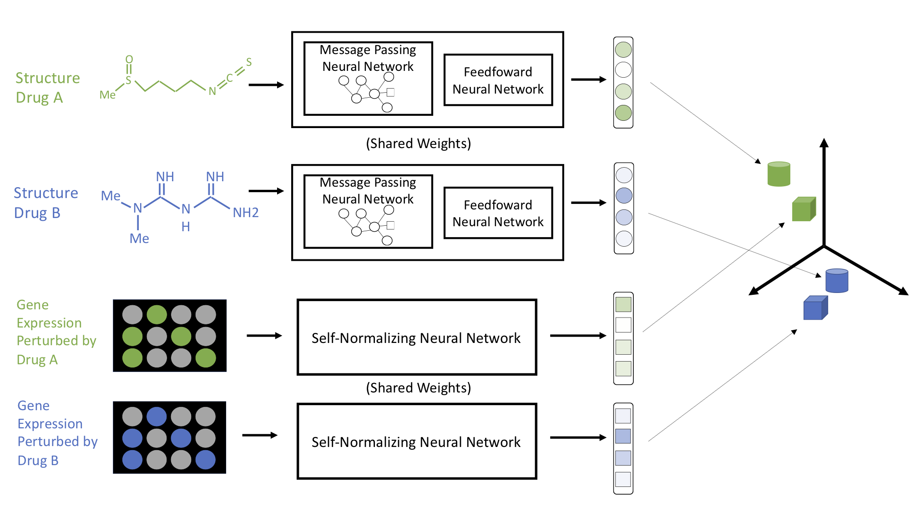
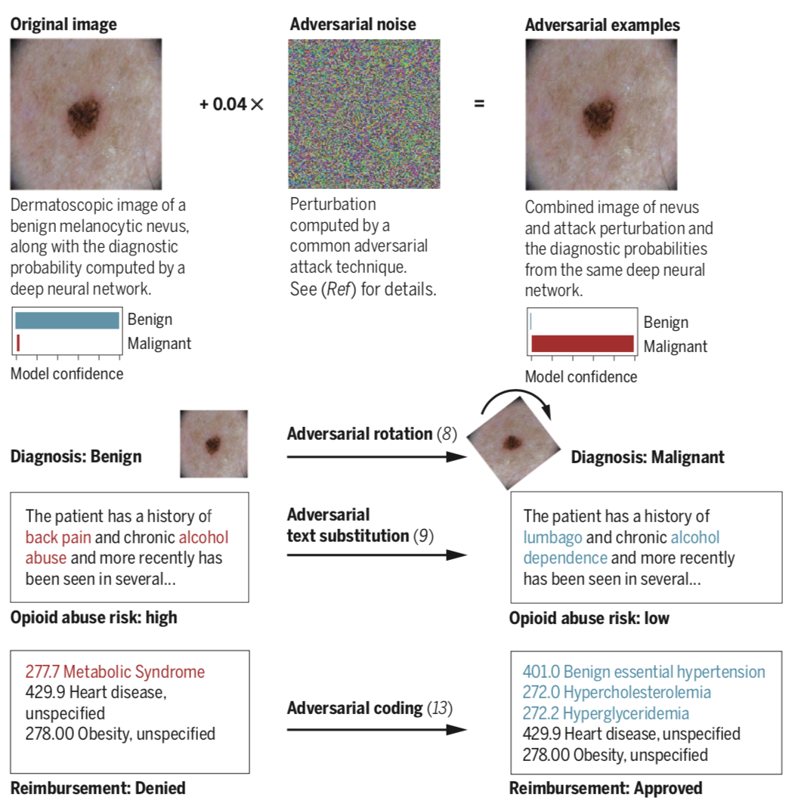
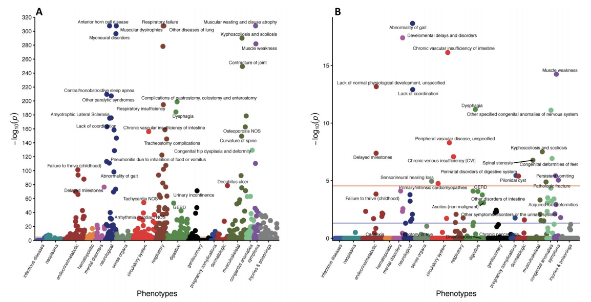
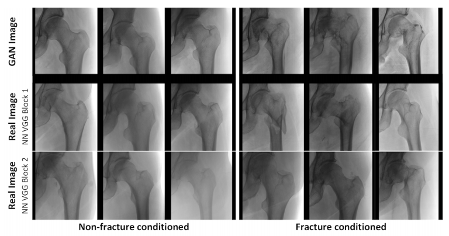
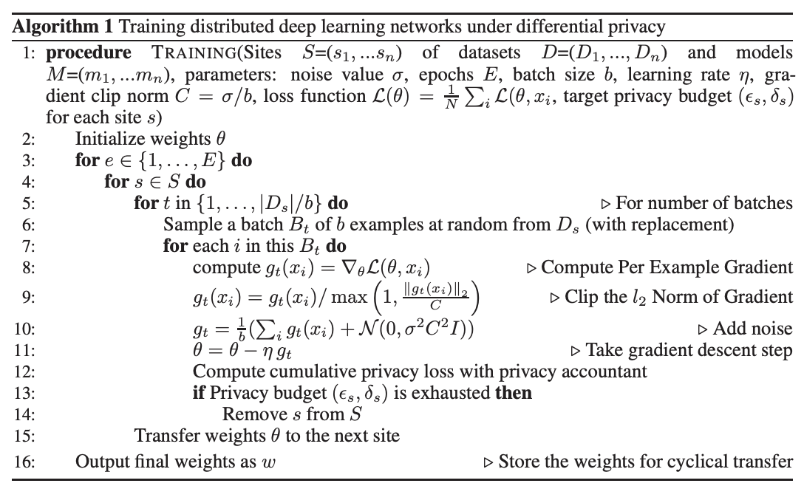

I am a MD-PhD candidate working with Isaac Kohane (Harvard DBMI) and Peter Szolovits (MIT CSAIL). My research centers on biomedical applications of machine learning, which has allowed me to participate in a range of really fun projects leveraging medical images, medical text, EHR and claims data, and various 'omics. I am also interested in the topic of medical AI safety.
Most recently, my primary focus has shifted to developing algorithms for the diagnosis and treatment of rare and complex diseases. I'm working on this as part of the Undiagnosed Disease Network as well as through collaborations with some amazing experts in disease modeling and drug development.
In addition to my research, I am very involved in the Hydrocephalus community by way of Team Hydro, a non-profit organization that my family and I started to raise money and awareness for the condition in honor of my sister, Kate. I also do consulting work as a data scientist and deep learning engineer, with current and former clients including Flagship Pioneering and nference.
For a more formal account of my academic work, see my Curriculum Vitae or Google Scholar.
Selected Research
-

Approaching Small Molecule Prioritization as a Cross-Modal Information Retrieval Task through Coordinated Representation Learning
Samuel Finlayson, Matthew McDermott, Alex Pickering, Scott Lipnick, William Yuan, Isaac Kohane
In Submission. 2019
[Abstract] [Paper]Modeling the relationship between chemical structure and molecular activity is a key task in drug development and precision medicine. In this paper, we utilize a novel deep learning architecture to jointly train coordinated embeddings of chemical structure and transcriptional signatures. We then evaluate these embeddings' utility for small molecule prioritization on a new benchmark task. Our method outperforms a series of baselines on this task, but still struggles to generalize to entirely unseen chemical structures. -

Adversarial attacks on medical machine learning
Samuel Finlayson, John Bowers, Joi Ito, Jonathan Zittrain, Andrew Beam, Isaac Kohane
Science, 2019
[Abstract] [Paper] [GitHub]
[Preprint/Supplement (more technical)]
[FAQ] [Sample press: NYT, New Yorker, IEE, Vox, Axios]With public and academic attention increasingly focused on the new role of machine learning in the health information economy, an unusual and no-longer-esoteric category of vulnerabilities in machine learning systems could prove significant. These vulnerabilities allow a small, carefully-designed change in how inputs are presented to a system to completely alter its output, causing it to confidently arrive at manifestly wrong conclusions. These advanced techniques to subvert otherwise-reliable machine learning systems – so-called adversarial attacks – have, to date, been of interest primarily to computer science researchers. However, the landscape of often-competing interests within healthcare, and billions of dollars at stake in systems’ outputs, implies considerable problems. We outline motivations that various players in the healthcare system may have to employ adversarial attacks, and begin a discussion of what to do about them. Far from discouraging continued innovation with medical machine learning, we call for active engagement of medical, technical, legal, and ethical experts in pursuit of efficient, broadly-available, and effective health care that machine learning will enable. -

Systemic nature of spinal muscular atrophy revealed by studying insurance claims
Scott Lipnick, Denis Agniel, Rahul Aggarwal, Nina Makhortova, Samuel Finlayson... Isaac Kohane , Lee Rubin
Plos One, 2019
[Abstract] [Paper]Objective We investigated the presence of non-neuromuscular phenotypes in patients affected by Spinal Muscular Atrophy (SMA), a disorder caused by a mutation in the Survival of Motor Neuron (SMN) gene, and whether these phenotypes may be clinically detectable prior to clinical signs of neuromuscular degeneration and therefore independent of muscle weakness.
Methods: We utilized a de-identified database of insurance claims to explore the health of 1,038 SMA patients compared to controls. Two analyses were performed: (1) claims from the entire insurance coverage window; and (2) for SMA patients, claims prior to diagnosis of any neuromuscular disease or evidence of major neuromuscular degeneration to increase the chance that phenotypes could be attributed directly to reduced SMN levels. Logistic regression was used to determine whether phenotypes were diagnosed at significantly different rates between SMA patients and controls and to obtain covariate-adjusted odds ratios.
Results: Results from the entire coverage window revealed a broad spectrum of phenotypes that are differentially diagnosed in SMA subjects compared to controls. Moreover, data from SMA patients prior to their first clinical signs of neuromuscular degeneration revealed numerous non-neuromuscular phenotypes including defects within the cardiovascular, gastrointestinal, metabolic, reproductive, and skeletal systems. Furthermore, our data provide evidence of a potential ordering of disease progression beginning with these non-neuromuscular phenotypes.
Conclusions: Our data point to a direct relationship between early, detectable non-neuromuscular symptoms and SMN deficiency. Our findings are particularly important for evaluating the efficacy of SMN-increasing therapies for SMA, comparing the effectiveness of local versus systemically delivered therapeutics, and determining the optimal therapeutic treatment window prior to irreversible neuromuscular damage. -

Towards generative adversarial networks as a new paradigm for radiology education
Samuel Finlayson, Hyunkwang Lee, Isaac Kohane, Luke Oakden-Rayner
Machine Learning for Health (NeurIPS Workshop), 2018
[Abstract] [Paper] [Description/Backstory]Medical students and radiology trainees typically view thousands of images in order to ”train their eye” to detect the subtle visual patterns necessary for diagnosis. Nevertheless, infrastructural and legal constraints often make it difficult to access and quickly query an abundance of images with a user-specified feature set. In this paper, we use a conditional generative adversarial network (GAN) to synthesize 1024 × 1024 pixel pelvic radiographs that can be queried with conditioning on fracture status. We demonstrate that the conditional GAN learns features that distinguish fractures from non-fractures by training a convolutional neural network exclusively on images sampled from the GAN and achieving an AUC of > 0.95 on a held-out set of real images. We conduct additional analysis of the images sampled from the GAN and describe ongoing work to validate educational efficacy.Generative adversarial networks (GANs) are a very cool technique that uses dualing neural networks to try to learn to approximate a data distribution. They have been used to create some beautiful images, but some researchers have current techniques don't appear to learn the full data distribution they're trying to approximate. As a researcher, this makes me nervous about using GAN-sampled images as an data substitutes in high-stakes clinical applications, but I'm still very interested in considering ways we could find productive uses for GANs while we're figuring out how to solve their limitations.
As a medical student on a radiology rotation, I spent many hours staring at websites like this this one, trying to proverbially "train my eye." Note that the above tool--which I found indispensible--only shows 500 *normal* chest x-rays. This produced the mild epiphany that in radiology education, individual tools can be useful even if they just help students see many variants of a thin subset of the data distribution. What I wanted as a student was to pre-specify a combo of medical features, and then cook up an arbitrary number of slightly different images that had them all. In theory, a conditional GAN could do just this, with limited storage and no active link to hospital IT systems.
Back in grad school, I met Hyunkwang Lee during a class with Sasha Rush, and we decided to work on conditional image generation using GANs. We reached out to Luke Oakden-Rayner, who gave us access to an amazing dataset. We played around on this using the StackGAN framework during the class project, and have since extended it into this work using Progressive Growing of GANs. -

Privacy-Preserving Distributed Deep Learning for Clinical Data
Brett Beaulieu-Jones, William Yuan, Samuel Finlayson, Zhiwei Steven Wu
Machine Learning for Health (NeurIPS Workshop), 2018
[Abstract] [Paper]Deep learning with medical data often requires larger samples sizes than are available at single providers. While data sharing among institutions is desirable to train more accurate and sophisticated models, it can lead to severe privacy concerns due the sensitive nature of the data. This problem has motivated a number of studies on distributed training of neural networks that do not require direct sharing of the training data. However, simple distributed training does not offer provable privacy guarantees to satisfy technical safe standards and may reveal information about the underlying patients. We present a method to train neural networks for clinical data in a distributed fashion under differential privacy. We demonstrate these methods on two datasets that include information from multiple independent sites, the eICU collaborative Research Database and The Cancer Genome Atlas. -

Predictability and persistence of prebiotic dietary supplementation in a healthy human cohort
Thomas Gurry, HST Microbiome Consortium, ... Eric Alm
Scientific Reports, 2018
[Abstract] [Paper] [Description/Backstory]Dietary interventions to manipulate the human gut microbiome for improved health have received increasing attention. However, their design has been limited by a lack of understanding of the quantitative impact of diet on a host’s microbiota. We present a highly controlled diet perturbation experiment in a healthy, human cohort in which individual micronutrients are spiked in against a standardized background. We identify strong and predictable responses of specific microbes across participants consuming prebiotic spike-ins, at the level of both strains and functional genes, suggesting fine-scale resource partitioning in the human gut. No predictable responses to non-prebiotic micronutrients were found. Surprisingly, we did not observe decreases in day-to-day variability of the microbiota compared to a complex, varying diet, and instead found evidence of diet-induced stress and an associated loss of biodiversity. Our data offer insights into the effect of a low complexity diet on the gut microbiome, and suggest that effective personalized dietary interventions will rely on functional, strain-level characterization of a patient’s microbiota.This was a really fun project with a long story behind it. In brief, during the first year of medical school, some friends and I began wondering if we could execute a clinical experiment on ourselves. Inspired by the use of Soylent by some of our classmates -- and some reservations that we had about the quality of control arms in microbiome studies -- we came up with an idea: recruit about 50 graduate students, place them on an identical all-liquid diet, and run a seven-arm clinical experiment with 6 arms receiving a spike-in of a single macronutrient for the second half of the study period. Thus the "HST microbiome consortium" was born. As it turned out, Thomas Gurry and Eric Alm (researchers at MIT), had been thinking along similar lines as well. So we teamed up, ran the experiment together, and the result was this paper! We wrote a bit more on the backstory here. -

Potential Adverse Effects of Broad-Spectrum Antimicrobial Exposure in the Intensive Care Unit
Jenna Wiens*, Graham Snyder*, Samuel Finlayson, Monica Majoney, Leo Celi
Open Forum Infectious Diseases, 2018
[Abstract] [Paper]Background: The potential adverse effects of empiric broad-spectrum antimicrobial use among patients with suspected but subsequently excluded infection have not been fully characterized. We sought novel methods to quantify the risk of adverse effects of broad-spectrum antimicrobial exposure among patients admitted to an intensive care unit (ICU).
Methods: Among all adult patients admitted to ICUs at a single institution, we selected patients with negative blood cultures who also received ≥1 broad-spectrum antimicrobials. Broad-spectrum antimicrobials were categorized in ≥1 of 5 categories based on their spectrum of activity against potential pathogens. We performed, in serial, 5 cohort studies to measure the effect of each broad-spectrum category on patient outcomes. Exposed patients were defined as those receiving a specific category of broad-spectrum antimicrobial; nonexposed were all other patients in the cohort. The primary outcome was 30-day mortality. Secondary outcomes included length of hospital and ICU stay and nosocomial acquisition of antimicrobial-resistant bacteria (ARB) or Clostridium difficile within 30 days of admission.
Results: Among the study cohort of 1918 patients, 316 (16.5%) died within 30 days, 821 (42.8%) had either a length of hospital stay >7 days or an ICU length of stay >3 days, and 106 (5.5%) acquired either a nosocomial ARB or C. difficile. The short-term use of broad-spectrum antimicrobials in any of the defined broad-spectrum categories was not significantly associated with either primary or secondary outcomes.
Conclusions: The prompt and brief empiric use of defined categories of broad-spectrum antimicrobials could not be associated with additional patient harm. -

Toward rapid learning in cancer treatment selection: An interactive analytical engine for clinical oncology
Samuel Finlayson, Mia Levy, Sunil Reddy, Daniel Rubin
Journal of Biomedical Informatics, 2016
[Abstract] [Paper] [GitHub]OBJECTIVE: Wide-scale adoption of electronic medical records (EMRs) has created an unprecedented opportunity for the implementation of Rapid Learning Systems (RLSs) that leverage primary clinical data for real-time decision support. In cancer, where large variations among patient features leave gaps in traditional forms of medical evidence, the potential impact of a RLS is particularly promising. We developed the Melanoma Rapid Learning Utility (MRLU), a component of the RLS, providing an analytical engine and user interface that enables physicians to gain clinical insights by rapidly identifying and analyzing cohorts of patients similar to their own.
MATERIALS AND METHODS: A new approach for clinical decision support in Melanoma was developed and implemented, in which patient-centered cohorts are generated from practice-based evidence and used to power on-the-fly stratified survival analyses. A database to underlie the system was generated from clinical, pharmaceutical, and molecular data from 237 patients with metastatic melanoma from two academic medical centers. The system was assessed in two ways: (1) ability to rediscover known knowledge and (2) potential clinical utility and usability through a user study of 13 practicing oncologists.
RESULTS: The MRLU enables physician-driven cohort selection and stratified survival analysis. The system successfully identified several known clinical trends in melanoma, including frequency of BRAF mutations, survival rate of patients with BRAF mutant tumors in response to BRAF inhibitor therapy, and sex-based trends in prevalence and survival. Surveyed physician users expressed great interest in using such on-the-fly evidence systems in practice (mean response from relevant survey questions 4.54/5.0), and generally found the MRLU in particular to be both useful (mean score 4.2/5.0) and useable (4.42/5.0).
DISCUSSION: The MRLU is an RLS analytical engine and user interface for Melanoma treatment planning that presents design principles useful in building RLSs. Further research is necessary to evaluate when and how to best use this functionality within the EMR clinical workflow for guiding clinical decision making.
CONCLUSION: The MRLU is an important component in building a RLS for data driven precision medicine in Melanoma treatment that could be generalized to other clinical disorders. -

Detecting Unplanned Care From Clinician Notes in Electronic Health Records
Suzanne Tamang, Manali Patel, Douglas Blayney, Julie Kuznetsov, Samuel Finlayson, ... Nigam Shah
Journal of Oncology Practice, 2015
[Abstract] [Paper]Purpose: Reduction in unplanned episodes of care, such as emergency department visits and unplanned hospitalizations, are important quality outcome measures. However, many events are only documented in free-text clinician notes and are labor intensive to detect by manual medical record review.
Methods: We studied 308,096 free-text machine-readable documents linked to individual entries in our electronic health records, representing care for patients with breast, GI, or thoracic cancer, whose treatment was initiated at one academic medical center, Stanford Health Care (SHC). Using a clinical text-mining tool, we detected unplanned episodes documented in clinician notes (for non-SHC visits) or in coded encounter data for SHC-delivered care and the most frequent symptoms documented in emergency department (ED) notes.
Results: Combined reporting increased the identification of patients with one or more unplanned care visits by 32% (15% using coded data; 20% using all the data) among patients with 3 months of follow-up and by 21% (23% using coded data; 28% using all the data) among those with 1 year of follow-up. Based on the textual analysis of SHC ED notes, pain (75%), followed by nausea (54%), vomiting (47%), infection (36%), fever (28%), and anemia (27%), were the most frequent symptoms mentioned. Pain, nausea, and vomiting co-occur in 35% of all ED encounter notes.
Conclusion: The text-mining methods we describe can be applied to automatically review free-text clinician notes to detect unplanned episodes of care mentioned in these notes. These methods have broad application for quality improvement efforts in which events of interest occur outside of a network that allows for patient data sharing. -

Building the Graph of Medicine from Millions of Clinical Narratives
Samuel Finlayson, Paea LePendu, Nigam Shah
Scientific Data, 2014
[Abstract] [Paper] [Data]Electronic health records (EHR) represent a rich and relatively untapped resource for characterizing the true nature of clinical practice and for quantifying the degree of inter-relatedness of medical entities such as drugs, diseases, procedures and devices. We provide a unique set of co-occurrence matrices, quantifying the pairwise mentions of 3 million terms mapped onto 1 million clinical concepts, calculated from the raw text of 20 million clinical notes spanning 19 years of data. Co-frequencies were computed by means of a parallelized annotation, hashing, and counting pipeline that was applied over clinical notes from Stanford Hospitals and Clinics. The co-occurrence matrix quantifies the relatedness among medical concepts which can serve as the basis for many statistical tests, and can be used to directly compute Bayesian conditional probabilities, association rules, as well as a range of test statistics such as relative risks and odds ratios. This dataset can be leveraged to quantitatively assess comorbidity, drug-drug, and drug-disease patterns for a range of clinical, epidemiological, and financial applications.